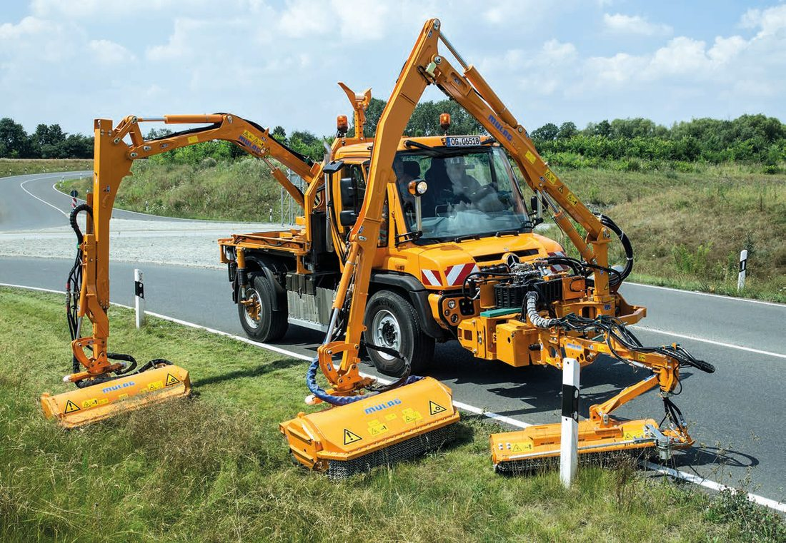
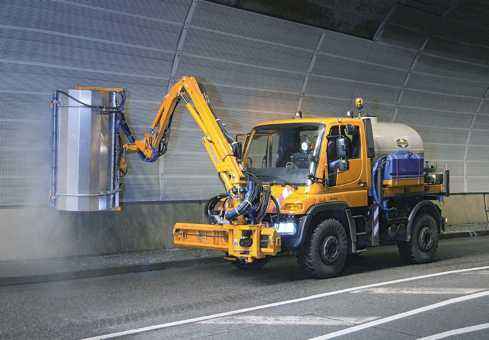
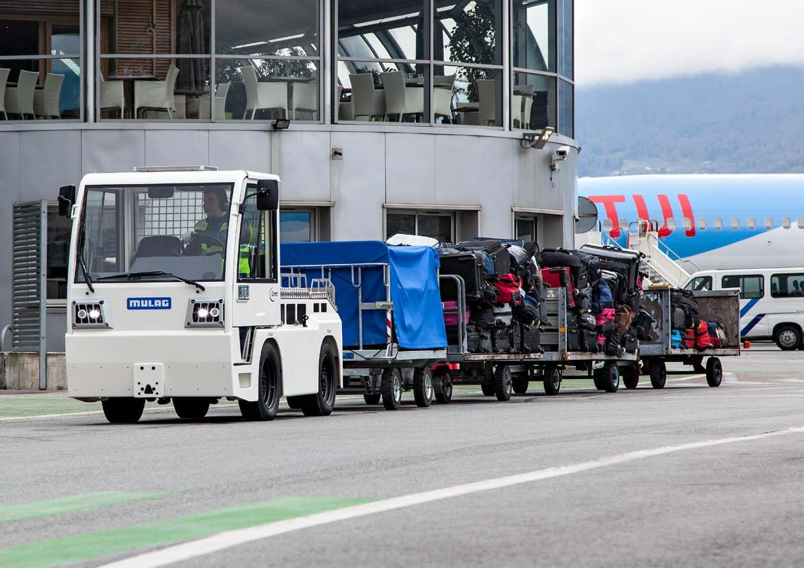
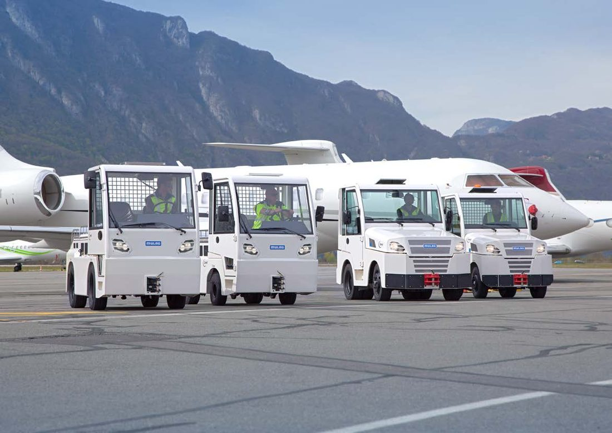
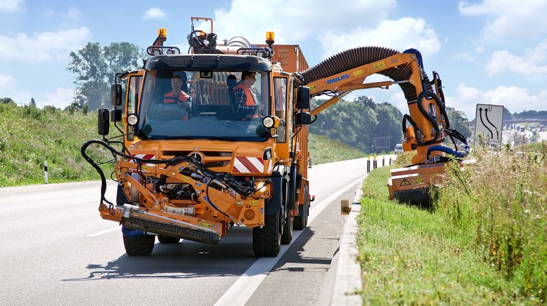
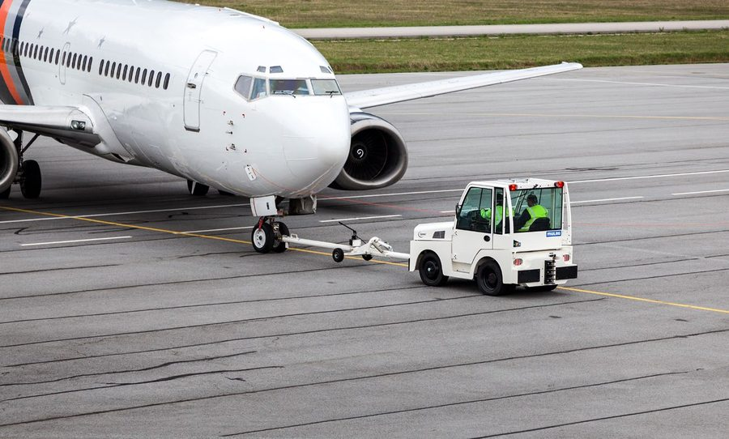
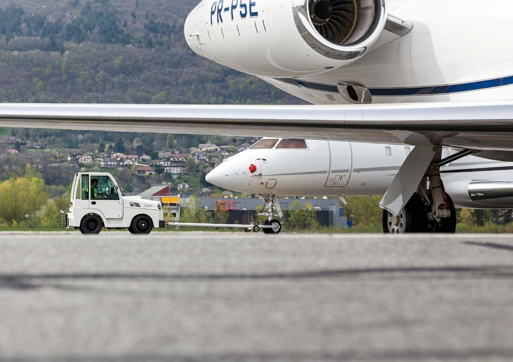
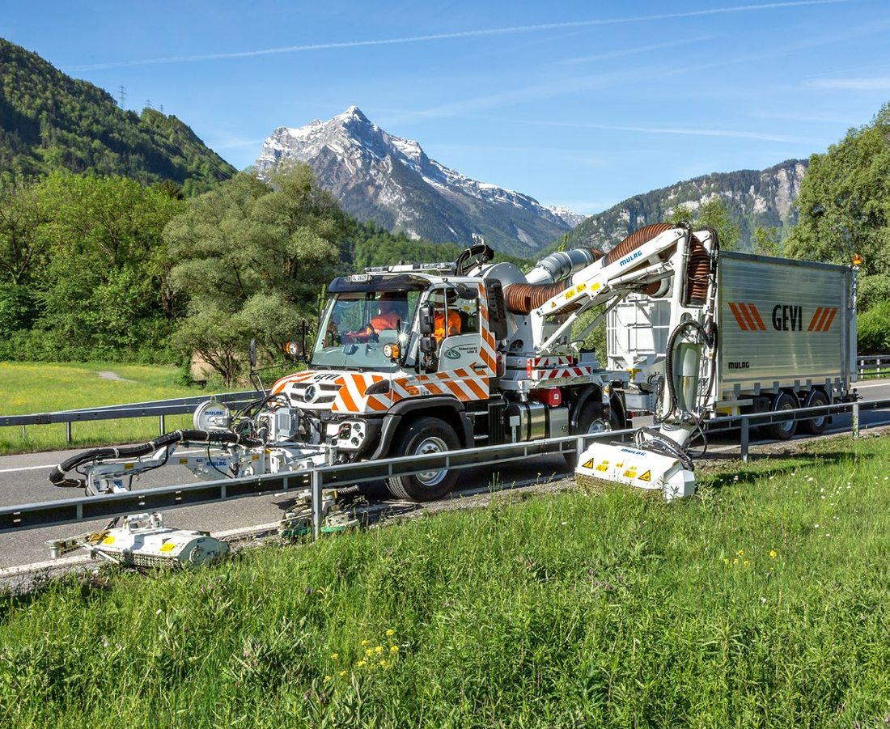

MULAG –
Von der Landstraße bis zum Rollfeld: MULAG Fahrzeugwerk entwickelt und produziert Kommunalfahrzeuge, Mähgeräte, Tunnelreinigungstechnik, Schlepper und Flughafentechnik – seit Jahrzehnten mit Präzision aus dem Schwarzwald.
Unsere Produkte
Präzisionsgefertigte Fahrzeuge und Anbaugeräte für jeden Einsatz – robust, zuverlässig und wartungsfreundlich.

Mähgeräte – Präzision von der Böschung bis zur Baumschere
MULAG Mähgeräte sichern Straßenränder, Böschungen und Begleitgrün zuverlässig und wirtschaftlich. Für Kommunen, Straßenmeistereien und Lohnunternehmen: hydraulische Auslegermäher, Schlegeler, Baumscherenmäher und Spezialmaschinen für jeden Einsatz.
Mähgeräte anfragen
Tunnelreinigung – Sauber auf allen Flächen
MULAG Tunnelwaschgeräte reinigen Tunnelwände, Leitsysteme und Verkehrsflächen zuverlässig und wirtschaftlich. Am Unimog-Ausleger montiert, erreichen sie auch hochgelegene Flächen – ideal für Autobahnmeistereien und Tunnelbetreiber.
Tunnelreinigung anfragen
Gepäck- & Frachtschlepper – Zuverlässig im Dauereinsatz
Die MULAG Comet-Baureihe zieht Gepäckwagen, Frachtanhänger und Gerätetrains über Flughafen-Vorfelder und Industriegelände – wendig, robust und im Dauerbetrieb bewährt bei Kommunen, Industrie und Flughafenbetreibern.
Schlepptechnik anfragen
Flughafen-Equipment – Höchste Zuverlässigkeit auf dem Rollfeld
Für Flughäfen und Airfields bietet MULAG spezialisierte Fahrzeuge: Pushback- und Vorfeldschlepper, Rollfeld-Kehrtechnik und Grasmaschinen für Sicherheitsstreifen – zugelassen und erprobt für den anspruchsvollen Luftfahrtbetrieb.
Flughafentechnik anfragenUnsere Kunden & Einsatzgebiete
MULAG-Fahrzeuge sind in Kommunen, auf Autobahnmeistereien, Flughäfen und bei Lohnunternehmen in ganz Europa und darüber hinaus im Einsatz.




Über MULAG
MULAG Fahrzeugwerk Heinz Wössner GmbH – Technikkönner aus dem Schwarzwald
MULAG steht seit Jahrzehnten für innovative Kommunalfahrzeuge, die in Kommunen, auf Autobahnen, Flughäfen und Industrieflächen weltweit ihren Dienst tun. Als familiegeführtes Unternehmen im Schwarzwald verbinden wir schweizerische Präzision mit dem Erfindergeist eines echten Mittelständlers.
Jedes MULAG-Fahrzeug entsteht mit tiefem technischen Know-how und dem Anspruch, dass es – egal ob im Dauereinsatz bei -20 Grad oder unter Hochsommerhitze – einfach funktioniert. Robust, langlebig, wirtschaftlich.
- Entwicklung & Produktion in Deutschland
- Umfassendes Händler- & Servicenetz
- Ersatzteile & Kundendienst weltweit
Unser Team
Ansprechpartner folgt
Ansprechpartner folgt
Ansprechpartner folgt
Kontakt
Haben Sie Fragen zu unseren Produkten oder benötigen Sie ein Angebot? Sprechen Sie uns an – wir melden uns schnellstmöglich.
Adresse
MULAG FahrzeugwerkHeinz Wössner GmbH u. Co. KG
Gewerbestraße 8
77728 Oppenau
Telefon & Fax
Telefon: +49 7804 913-0
Fax: +49 7804 913-149